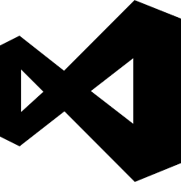

Visual Studio Code (VS Code) — редактор исходного кода, разработанный Microsoft для Windows, Linux и macOS.
Позиционируется как «лёгкий» редактор кода для кроссплатформенной разработки веб- и облачных приложений.
Ссылка на главную страницу
Языки поддерживаемие на VS Code: